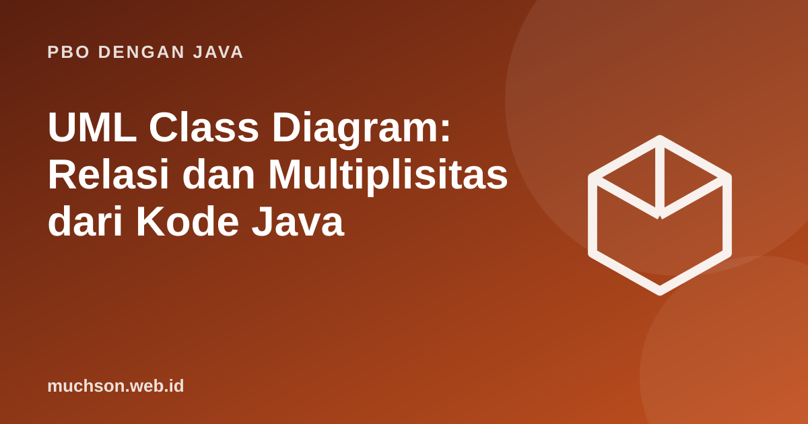

Beranda › Artikel › PBO dengan Java
PBO dengan JavaUML Class Diagram: Relasi dan Multiplisitas dari Kode Java
Diagram kelas adalah bahasa gambar bersama untuk membicarakan desain. Anda tidak perlu menghafal seluruh UML; cukup tujuh simbol relasi dan cara membaca multiplisitas. Materi ini memetakan setiap simbol ke kode Java yang sesuai, sehingga gambar dan kode saling menjelaskan.
Sebaiknya sudah paham: class dan objek, inheritance, interface

Tujuan belajar
Setelah membaca dan mencoba materi ini, Anda mampu:
- membaca kotak class: nama, atribut, operasi, visibilitas
- membedakan asosiasi, agregasi, komposisi, pewarisan, realisasi, dan dependensi
- membaca multiplisitas (1, 0..1, *, 1..*)
- menerjemahkan diagram menjadi kerangka kode Java dan sebaliknya
- menyusun diagram kelas untuk studi kasus sederhana
Kotak class
Tujuh simbol hubungan
| Hubungan | Simbol | Makna | Bentuk dalam Java |
|---|---|---|---|
| Pewarisan (generalisasi) | garis solid, segitiga kosong | adalah sebuah (is-a) | class B extends A |
| Realisasi | garis putus-putus, segitiga kosong | memenuhi kontrak | class B implements I |
| Asosiasi | garis dengan panah terbuka | mengetahui atau memakai | atribut bertipe class lain |
| Agregasi | belah ketupat kosong | memiliki; bagian dapat hidup sendiri | atribut referensi yang diterima dari luar |
| Komposisi | belah ketupat terisi | memiliki; bagian mati bersama keseluruhan | atribut yang dibuat dan dimiliki penuh |
| Dependensi | panah putus-putus | memakai sementara | parameter atau variabel lokal |
Dari diagram ke kode: perpustakaan
import java.time.LocalDate;
import java.util.ArrayList;
import java.util.List;
class Buku {
private final String isbn, judul;
private boolean dipinjam;
Buku(String isbn, String judul) { this.isbn = isbn; this.judul = judul; }
boolean tersedia() { return !dipinjam; }
void tandaiDipinjam(boolean v) { dipinjam = v; }
String judul() { return judul; }
}
class Anggota {
private final String id, nama;
private final List<Peminjaman> riwayat = new ArrayList<>(); // asosiasi 1 → *
Anggota(String id, String nama) { this.id = id; this.nama = nama; }
int batas() { return 3; }
void catat(Peminjaman p) { riwayat.add(p); }
long aktif() { return riwayat.stream().filter(p -> !p.sudahKembali()).count(); }
String nama() { return nama; }
}
class Dosen extends Anggota { // pewarisan
Dosen(String id, String nama) { super(id, nama); }
@Override int batas() { return 10; }
}
class Peminjaman {
private final Buku buku; // asosiasi * → 1
private final LocalDate tanggal;
private boolean kembali;
Peminjaman(Buku buku, LocalDate tanggal) { this.buku = buku; this.tanggal = tanggal; buku.tandaiDipinjam(true); }
void kembalikan() { kembali = true; buku.tandaiDipinjam(false); }
boolean sudahKembali() { return kembali; }
}
class Perpustakaan {
private final List<Buku> koleksi = new ArrayList<>(); // komposisi: buku dimiliki perpustakaan
void tambahBuku(Buku b) { koleksi.add(b); }
Peminjaman pinjam(Anggota a, Buku b) {
if (!b.tersedia()) throw new IllegalStateException(b.judul() + " sedang dipinjam");
if (a.aktif() >= a.batas()) throw new IllegalStateException(a.nama() + " mencapai batas");
Peminjaman p = new Peminjaman(b, LocalDate.of(2026, 10, 23));
a.catat(p);
return p;
}
}
public class Main {
public static void main(String[] args) {
Perpustakaan lib = new Perpustakaan();
Buku b1 = new Buku("111", "Algoritma"), b2 = new Buku("222", "Java"), b3 = new Buku("333", "Basis Data");
lib.tambahBuku(b1); lib.tambahBuku(b2); lib.tambahBuku(b3);
Anggota ani = new Anggota("A1", "Ani"); Dosen dr = new Dosen("D1", "Pak Rudi");
lib.pinjam(ani, b1);
try { lib.pinjam(dr, b1); } catch (IllegalStateException e) { System.out.println("ditolak: " + e.getMessage()); }
System.out.println(dr.nama() + " batas " + dr.batas() + ", Ani batas " + ani.batas());
}
}ditolak: Algoritma sedang dipinjam
Pak Rudi batas 10, Ani batas 3
Komposisi atau agregasi?
Pedoman
Diagram yang baik menjawab satu pertanyaan dan memuat secukupnya. Jangan masukkan setiap atribut dan getter; tunjukkan class penting dan hubungan di antaranya. Diagram yang terlalu rinci cepat usang dan tak ada yang membacanya.
Latihan mandiriCoba kerjakan dulu sebelum membuka jawaban.
1. Gambarkan diagram kelas untuk Pesanan, Pelanggan, Produk, dan ItemPesanan.
Pelanggan 1—* Pesanan; Pesanan 1—* ItemPesanan (komposisi); ItemPesanan *—1 Produk.
2. Terjemahkan "Mobil memiliki satu Mesin (komposisi)" ke Java.
class Mobil { private final Mesin mesin = new Mesin(); }
3. Mengapa Dosen tidak perlu mengulang atribut id dan nama?
Atribut diwarisi dari Anggota.
4. Apa bedanya asosiasi dan dependensi?
Asosiasi adalah hubungan struktural (atribut); dependensi hanya pemakaian sementara (parameter atau variabel lokal).
Ringkasan
- Kotak class: nama, atribut, operasi dengan visibilitas.
- Pewarisan dan realisasi: segitiga kosong (solid dan putus-putus).
- Komposisi (♦ terisi) lebih kuat dari agregasi (◇ kosong); asosiasi adalah dasar.
- Multiplisitas menyatakan jumlah objek yang terlibat.
- Peta hubungan dapat diterjemahkan langsung ke kode.
Tanya jawab
Apakah UML masih dipakai?
Ya, terutama diagram kelas, urutan, dan aktivitas untuk komunikasi desain, sering dibuat cepat dengan alat teks seperti PlantUML atau Mermaid.
Apa itu diagram sekuens?
Menunjukkan urutan pesan antarobjek dari waktu ke waktu; dipakai untuk menjelaskan satu skenario.
Haruskah mendiagramkan sebelum coding?
Untuk desain yang rumit, sketsa singkat membantu. Hindari diagram lengkap di muka yang kemudian tidak diperbarui.
Referensi
- Object Management Group: Unified Modeling Language (UML) Specification
- Martin Fowler, UML Distilled (Addison-Wesley, edisi ke-3)
- PlantUML: Class Diagram
- Joshua Bloch, Effective Java (edisi ke-3, Addison-Wesley, 2018)